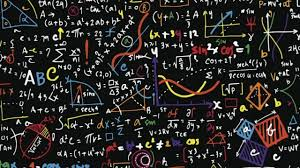

¿Qué son las Matematicas?
Las Matematicas son la ciencia que estudia los numeros, las cantidades, las formas y las relaciones entre ellas. Permiten resolver problemas, realizar calculos y comprender mejor el mundo que nos rodea. No solo se trata de hacer operaciones, sino de desarrollar el pensamiento logico y la capacidad de razonamiento.
¿Qué estudian las Matematicas?
Las Matematicas analizan:Por ejemplo:
¿Para qué sirven las Matematicas?
Las Matematicas permiten:Resumidamente
Las Matematicas son fundamentales para el desarrollo del conocimiento y la tecnologia. Nos ayudan a comprender el mundo mediante el uso de numeros, formas y razonamientos logicos.